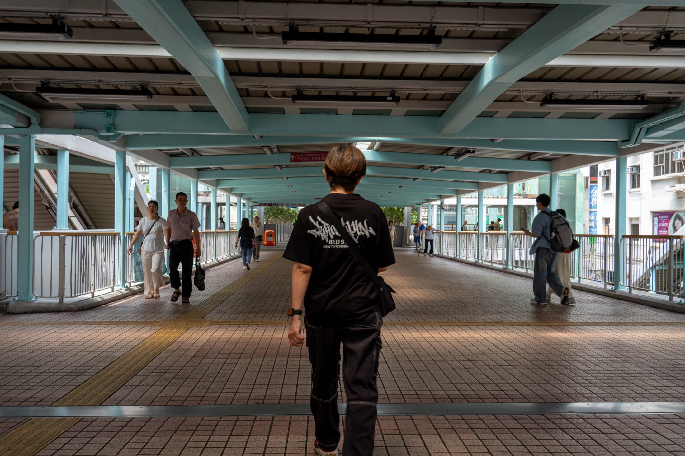
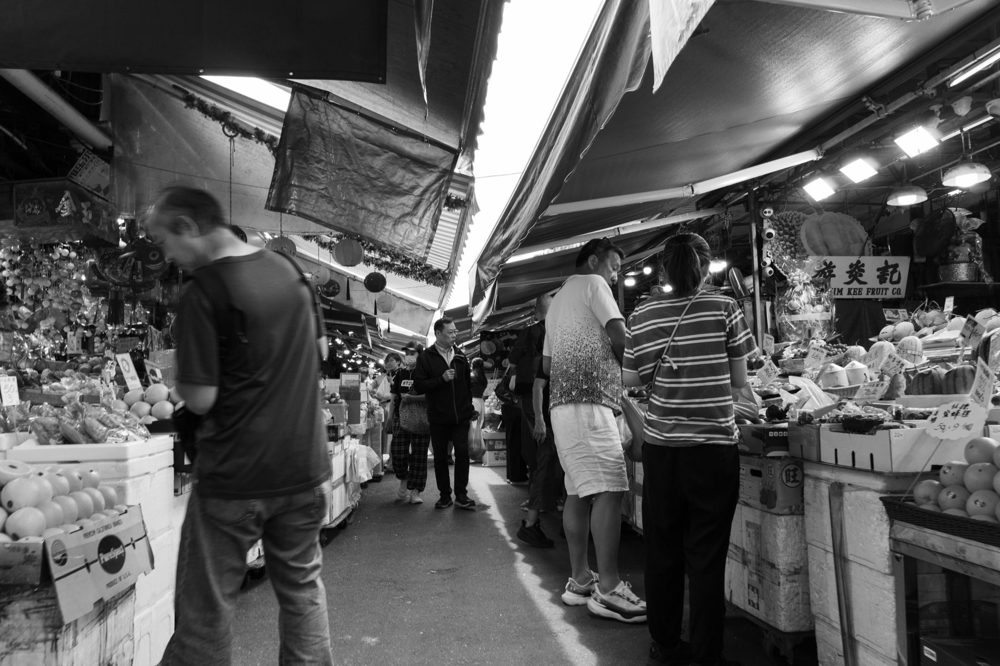
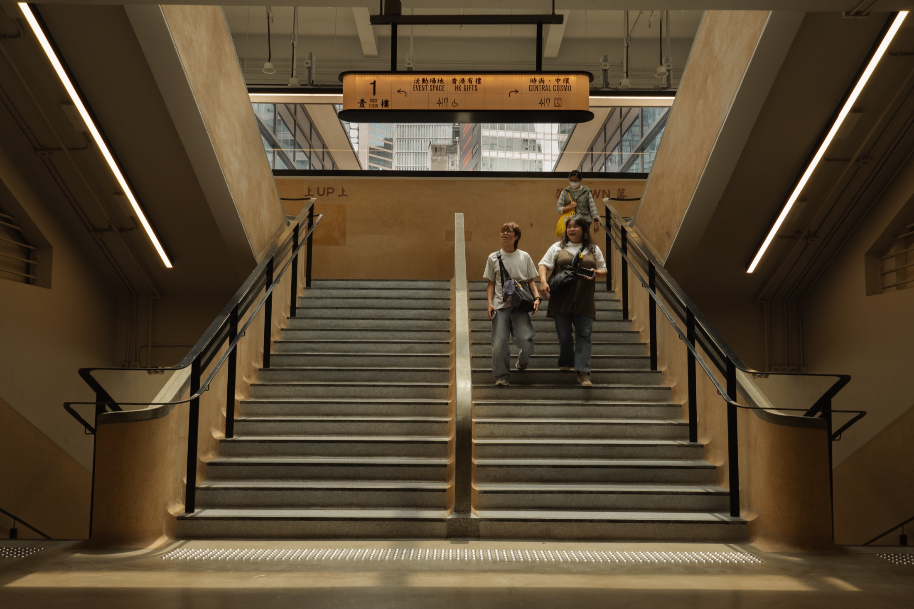
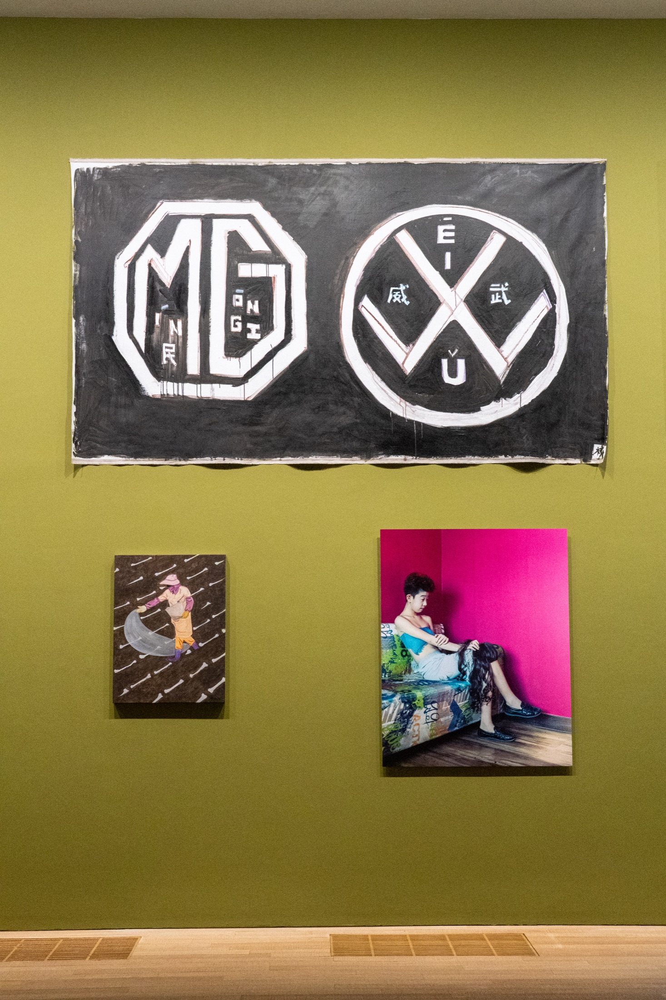

GF
／
GEORGE FAN
首页
作品集
文字
关于
← 返回所有作品集
COLLECTION 001 / 2026
香港
HONG KONG
从街市到天桥，从出租车到空着的椅子。七张照片，记录这座城市里一些刚好遇见的瞬间。
07 PHOTOGRAPHS
APR 2026
01 / 红色车流
THE SERIES / 作品影像
点击照片可放大

02
经过

03
街市

04
楼梯
05
停留

06
画廊一角
07
街口
END OF COLLECTION 001
所有作品集
↗
下一组：麦理浩径
↗
×
←
→